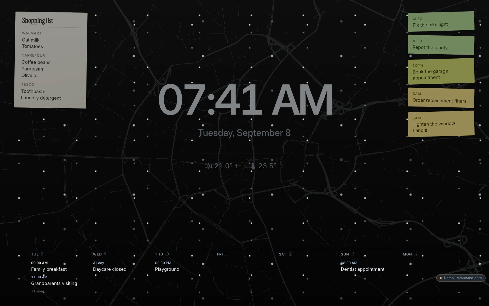
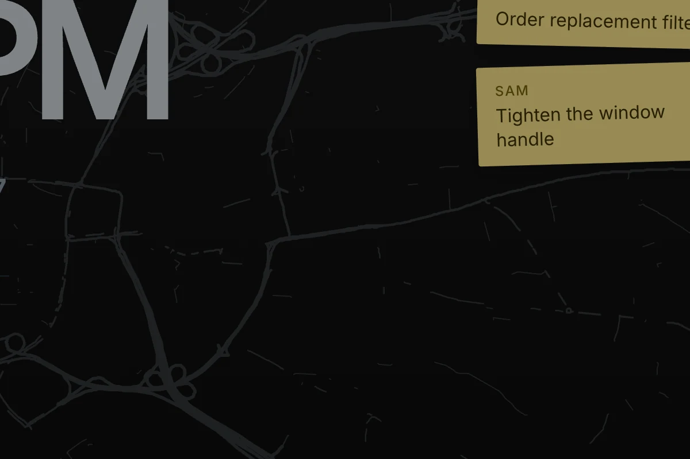

01 · The glance
Most of the day, the panel is a picture on the wall. So the picture got the most care.
After a few idle minutes the panel settles into standby: a large clock, the week ahead, the household's post-its, the shopping list, and behind all of it, faintly, the streets of your own neighbourhood, drawn once from OpenStreetMap around the place Home Assistant already knows.
The picture lives with the day. Snow drifts across it in a few flakes at a time; rain is drawn as ink traces in the text colour, quiet enough to stay behind the clock. Deep at night everything but a dimmed red clock goes away. Switch below.



Real captures of the demo. The same minute of the same day, once with the sun up and once with snow falling after dark.

- Your streets, not a texture. The map is rendered once on the server, as one monochrome file that takes whatever colour the text has. Day and night share it.
- Everything on it is a door. Touch the shopping list and you are in the list. Touch the week and you are in the calendar. Touch a post-it and you are with that person's reminders. Nothing to unlock first.
- It knows when to be quiet. Deep at night the screen keeps only a dimmed red clock. The hourly pixel shift that protects the panel is a soft slide, not a jump.